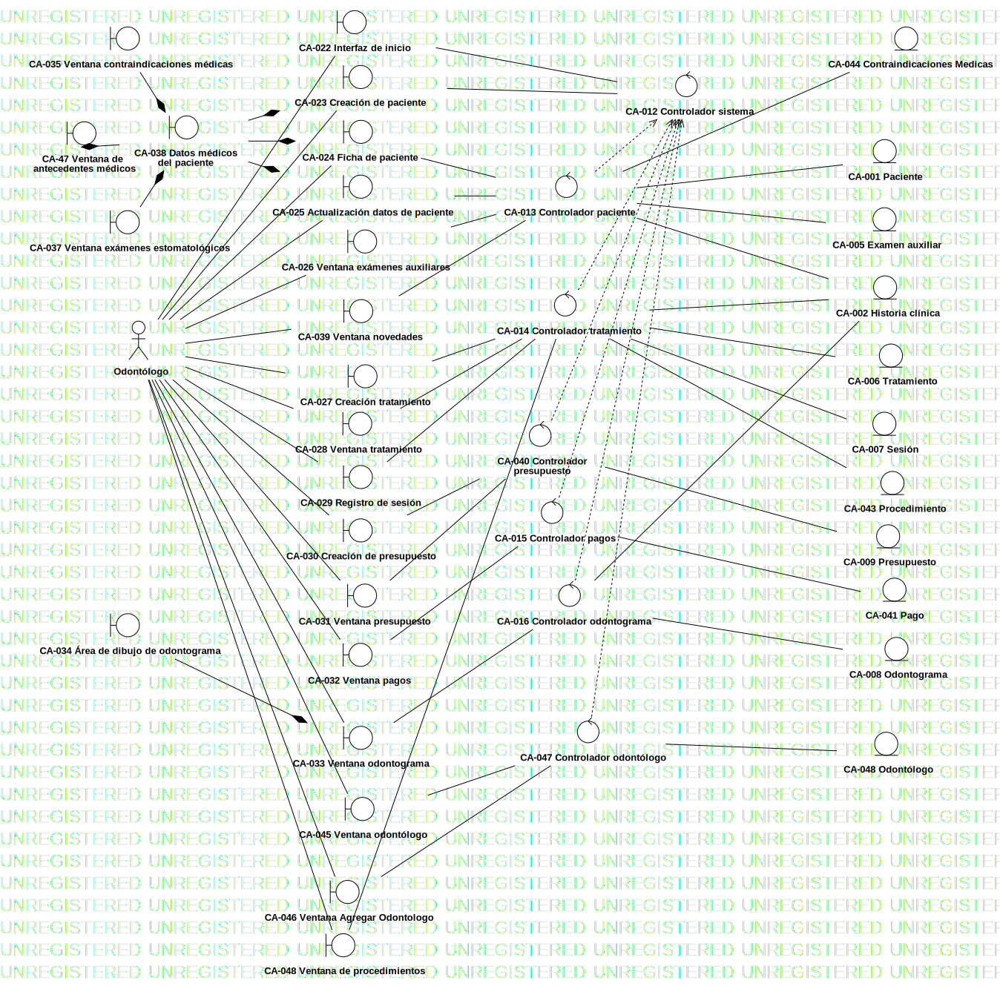

Modelo de clases de análisis
UMLModel
Dentware
::
Modelo de análisis
::
Modelo de clases de análisis
Description
none
Diagrams

Diagrama de clases de análisis
Properties
Name
Value
name
Modelo de clases de análisis
stereotype
null
visibility
public
importedElements
viewpoint
Owned Elements
Diagrama de clases de análisis
«entity»CA-001 Paciente
«entity»CA-005 Examen auxiliar
«entity»CA-006 Tratamiento
«entity»CA-007 Sesión
«entity»CA-008 Odontograma
«entity»CA-009 Presupuesto
«control»CA-012 Controlador sistema
«control»CA-015 Controlador pagos
«control»CA-013 Controlador paciente
«control»CA-016 Controlador odontograma
«control»CA-014 Controlador tratamiento
«boundary»CA-022 Interfaz de inicio
«boundary»CA-023 Creación de paciente
«boundary»CA-024 Ficha de paciente
«boundary»CA-025 Actualización datos de paciente
«boundary»CA-026 Ventana exámenes auxiliares
«boundary»CA-027 Creación tratamiento
«boundary»CA-028 Ventana tratamiento
«boundary»CA-029 Registro de sesión
«boundary»CA-030 Creación de presupuesto
«boundary»CA-031 Ventana presupuesto
«boundary»CA-032 Ventana pagos
«boundary»CA-033 Ventana odontograma
«boundary»CA-034 Área de dibujo de odontograma
«boundary»CA-035 Ventana contraindicaciones médicas
«boundary»CA-036 Ventana antecedentes médicos
«boundary»CA-037 Ventana exámenes estomatológicos
«boundary»CA-038 Datos médicos del paciente
Odontólogo
«entity»CA-002 Historia clínica
CA-039 Ventana novedades
«boundary»CA-039 Ventana novedades
«boundary»CA-040 Ventana pagos
«control»CA-041 Controlador Pago
«Control»CA-040 Controlador presupuesto
«control»CA-040 Controlador presupuesto
«entity»CA-041 Pago
«entity»CA-042 Examenes Auxiliares
«entity»CA-043 Procedimiento
«entity»CA-044 Odontologo
«entity»CA-044 Contraindicaciones Medicas